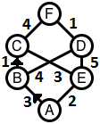
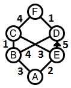

| Source file: | markers.{c, cpp, java} |
| Input file: | markers.in |
|  |
 |
| Figure 1 | Figure 2 |
Goblins have a web of tunnels up from their underground lairs. A schematic for one of their simpler systems is shown in Figure 1. The vertical direction is oriented upward on the page. The lair is at label A. The surface is at label F. The other labels mark tunnel intersections. Tunnels heading toward the surface from a given intersection are oriented as such in our diagram. This is a 2D schematic of a 3D tunnel system, so the paths shown crossing elsewhere than at a lettered intersection do not actually intersect. (For example, in the above model, the edge BD does not intersect the edge CE.)
A group of good wizards finds the need to rush through such tunnels to the surface in many of their adventures, following an upward path that takes the minimum amount of time. Many upward tunnels can leave an intersection, and there is no obvious way to choose the best tunnel in general. The wizards took the trouble to map the tunnels systems, noting the time required to travel up from one intersection to the next, as labeled in the above figures. They do not have opportunity to consult elaborate notes when in a hurry. Nor do they want to help their enemies that might be rushing through the same tunnels. They decide to put up a very discreet private mark at intersections where needed. A mark on a tunnel leaving an intersection means that wizards should follow that tunnel. They hope that they can make marks that only they will recognize, as there is a possibility that their system is discovered, particularly if they put up too many markers. It is important to mark as few intersections of tunnels as possible, while still guaranteeing that a wizard who always heads up at any intersection, and always take a marked tunnel where shown, will emerge in the minimum time. In Figure 1 possible direction markings are shown as arrow heads at A pointing toward B, and then at B pointing toward C. There is only one route up from C, so then any wizard following the markings to C would head for F and be out of the tunnels, with the total time of 3+1+4 = 8, the minimum possible.
Figure 2 shows the same schematic, except there is just one mark, directing any wizard at E to go to D. This does not totally determine a path, but it does ensure the minimum time: A wizard can go from A toward either B or E. If the wizard goes to B, there are two choices again, but all these paths heading upward cover the same minimum distance, 8. The only marker, at E, cannot be removed, or a wizard might try the route AECF for a total distance of 2+3+4=9. Hence to guarantee getting through the tunnels in minimum time (8), the minimum number of markers needed is 1. As an aside, there is another way to place just one marker for this example: at A pointing toward B.Input: The input will consist of one to 16 data sets, followed by a line containing only 0.
The first line of a data set contains an
integer n, (2 ≤ n
≤ 17), which is the number of labeled places; those
consist of the starting point,
ending point, and any intersections in the tunnel system in
between.
Each of the next n lines
describes the upward tunnels from one labeled point. Each
line has the same form, with blank separated
parts: The first part is a letter labeling a tunnel starting point,
then an integer, u, that is
the number of upward tunnels from that point.
After the label letter and u come u pairs, letter time, giving the integer time (1 ≤ time ≤ 500) to go through a tunnel from the current labeled point to the point with label letter.
The labels at the beginning of the n lines will be taken in order from the beginning of the capital letters. A
will always be the starting point and the last letter used will always
be the exit. Only the final line (for the exit) will have u = 0. For previous lines, 1 ≤ u ≤ 6.
Limiting assumptions:
The first sample input corresponds to that given in the
introductory figures.
Output: There is one line of output for
each data set, with two space-separated numbers: the
minimum time to travel from the lair to the surface,
and the minimum number of markers needed to assure that all wizards
travel that minimum time.
| Example input: | Example output: |
| 6 A 2 B 3 E 2 B 2 C 1 D 4 C 1 F 4 D 1 F 1 E 2 C 3 D 5 F 0 7 A 3 B 1 C 5 D 4 B 2 C 2 E 5 C 2 E 4 F 3 D 2 C 2 F 3 E 1 G 6 F 1 G 4 G 0 7 A 2 B 2 C 4 B 2 D 4 C 1 C 2 D 3 E 5 D 2 F 4 E 2 E 2 F 2 G 5 F 1 G 2 G 0 0 |
8 1 10 3 12 2 |
Last modified on October 20, 2012.